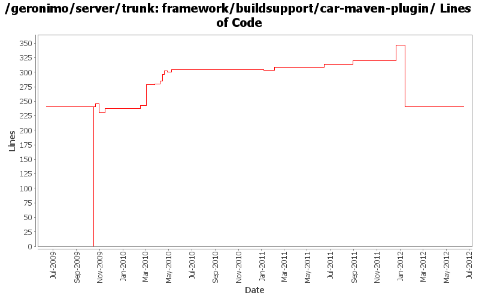

[root]/framework/buildsupport/car-maven-plugin
 src
(0 files, 0 lines)
src
(0 files, 0 lines)
 main
(0 files, 0 lines)
main
(0 files, 0 lines)
 java
(0 files, 0 lines)
java
(0 files, 0 lines)
 org
(0 files, 0 lines)
org
(0 files, 0 lines)
 apache
(0 files, 0 lines)
apache
(0 files, 0 lines)
 geronimo
(0 files, 0 lines)
geronimo
(0 files, 0 lines)
 mavenplugins
(0 files, 0 lines)
mavenplugins
(0 files, 0 lines)
 car
(12 files, 3638 lines)
car
(12 files, 3638 lines)
 resources
(0 files, 0 lines)
resources
(0 files, 0 lines)
 META-INF
(0 files, 0 lines)
META-INF
(0 files, 0 lines)
 maven
(1 files, 2529 lines)
maven
(1 files, 2529 lines)
 plexus
(1 files, 175 lines)
plexus
(1 files, 175 lines)
 site
(0 files, 0 lines)
site
(0 files, 0 lines)
 apt
(1 files, 109 lines)
apt
(1 files, 109 lines)

| Author | Changes | Lines of Code | Lines per Change |
|---|---|---|---|
| Totals | 33 (100.0%) | 499 (100.0%) | 15.1 |
| djencks | 17 (51.5%) | 409 (82.0%) | 24.0 |
| gawor | 7 (21.2%) | 59 (11.8%) | 8.4 |
| rickmcguire | 5 (15.2%) | 16 (3.2%) | 3.2 |
| xuhaihong | 2 (6.1%) | 12 (2.4%) | 6.0 |
| kevan | 1 (3.0%) | 2 (0.4%) | 2.0 |
| xiaming | 1 (3.0%) | 1 (0.2%) | 1.0 |
Update trunk version to 4.0.0-SNAPSHOT
1 lines of code changed in 1 file:
GERONIMO-6240 remove/clean up some unused startup code
0 lines of code changed in 1 file:
GERONIMO-6240 Make several base geronimo functions (kernel, deployer, etc) DS services and make the car-maven-plugin take advantage of that. Server assembly doesn't work yet, builds framework.
95 lines of code changed in 1 file:
GERONIMO-6240 fire up a karaf instance we assembled in target for the framework.
4 lines of code changed in 1 file:
GERONIMO-6240 modify car-maven-plugin to install karaf kars and features, use this for the base server
18 lines of code changed in 1 file:
GERONIMO-5734 Enable sharelib in osgi based geronimo
6 lines of code changed in 1 file:
move to released version of equinox 3.7
2 lines of code changed in 1 file:
GERONIMO-6007 Upgrade woodstox version to 4.1.1
6 lines of code changed in 1 file:
remove some unused dependencies
6 lines of code changed in 1 file:
[maven-release-plugin] prepare release 3.0-M2
1 lines of code changed in 1 file:
[maven-release-plugin] prepare branch 3.0-M2
2 lines of code changed in 1 file:
GERONIMO-5702: Update for Karaf 2.1.2. Based on patch from Viola Lu
2 lines of code changed in 1 file:
GERONIMO-5290 upgrade gmaven to most recent version that builds maven plugins, part 2 gossip has moved
14 lines of code changed in 1 file:
manage org.apache.felix.karaf.jaas.boot dependency version and expose the boot package via system bundle in geronimo-osgi-plugin
0 lines of code changed in 1 file:
use released yoko 1.1 - more cleanup
1 lines of code changed in 1 file:
GERONIMO-4680 get class transformers working somewhat in karaf. Make karaf script start geronimo
6 lines of code changed in 1 file:
GERONIMO-5092 corba plugins start, handle delegate gets into jndi, doesn't seem to break ejbs
11 lines of code changed in 1 file:
GERONIMO-5249 use Karaf's proxy login module to load login modules from correct bundles
5 lines of code changed in 1 file:
Switch to latest stax spec level
1 lines of code changed in 1 file:
Fix stax/jaxb problems when starting the framework assembly.
3 lines of code changed in 1 file:
GERONIMO-5201 Repace service versions of spec bundles with Geronimo latest versions.
9 lines of code changed in 1 file:
Switch to using osgi rather than felix core and compendium bundles, and try to fix the build by collecting all the repositories in a profile in the root pom
2 lines of code changed in 1 file:
GERONIMO-5166: Enable car-maven-plugin to use Equinox or Felix as the OSGi framework
41 lines of code changed in 1 file:
GERONIMO-4971 include obr repository.xml in every plugin, and install it into an obr instance when the plugin is installed. Also update the aries plugin and build it. The framework geronimo-obr module is written by Jarek Gawor with minor changes
6 lines of code changed in 1 file:
Add plugin for validating the generated manifest against the dependencies (bundles) using the osgi rules. Plugin borrows code from Tuscany maven eclipse compiler module
7 lines of code changed in 1 file:
don't need commons-cli bundle, latest release is osgi-ified. Straighten out a couple dependencies. Tests fail but builds through to tomcat clustering for me
1 lines of code changed in 1 file:
add bin/geronimo and bin/client that work just like before. bin/karaf will only start the karaf framework
2 lines of code changed in 1 file:
start work on connector_1.6. Builds up through geronimo-connector-builder
5 lines of code changed in 1 file:
GERONIMO-4916 step 2 move sandbox osgi framework into trunk
241 lines of code changed in 1 file:
GERONIMO-4916 step 1 remove old framwork
0 lines of code changed in 1 file:
GERONIMO-4655 upgrade version to 3.0-SNAPSHOT, make a few things more consistent
1 lines of code changed in 1 file:
GERONIMO-4684, GERONIMO-4685 Use our tomcat build, configure tomcat using server.xml. Also includes some spec jar updates including using our jaxb spec jar
0 lines of code changed in 2 files: